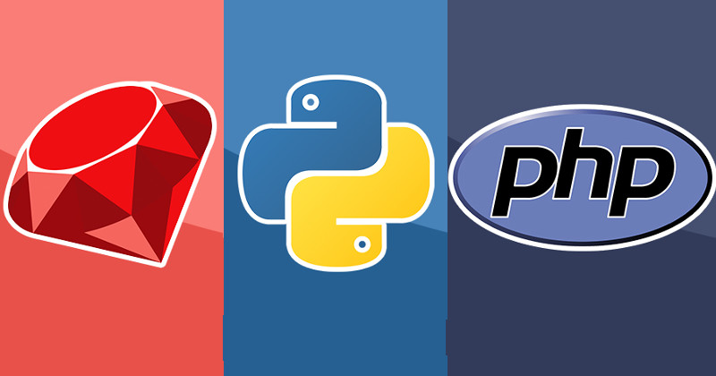

Which programming language is right for you?
Here at Epicodus we want to help you find the track that best fits you.
 A front-end web developer is responsible for implementing visual and interactive elements that users engage with through their web browser when using a web application. They are usually supported by back-end web developers, who are responsible for server-side application logic and integration of the work front-end developers do.
A front-end web developer is responsible for implementing visual and interactive elements that users engage with through their web browser when using a web application. They are usually supported by back-end web developers, who are responsible for server-side application logic and integration of the work front-end developers do.
A back-end developer is a type of programmer who creates the logical back-end and core computational logic of a website, software or information system. The developer creates components and features that are indirectly accessed by a user through a front-end application or system.
The term full-stack means developers who are comfortable working with both back-end and front-end technologies.